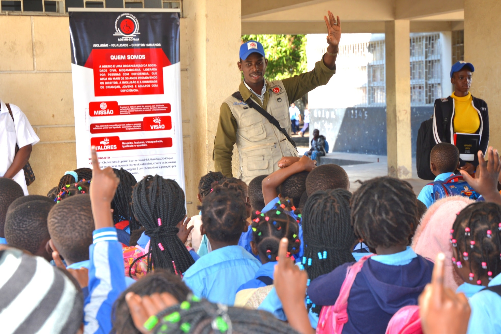

Frente 01
Avaliação das Necessidades de Formação
Realizamos diagnósticos aprofundados nas escolas para identificar as lacunas no conhecimento dos professores sobre educação inclusiva. A partir destes dados, propomo s módulos de formação complementar adaptados a cada contexto escolar — porque cada escola tem os seus desafios próprios.
📋 Diagnóstico · Módulos Customizados